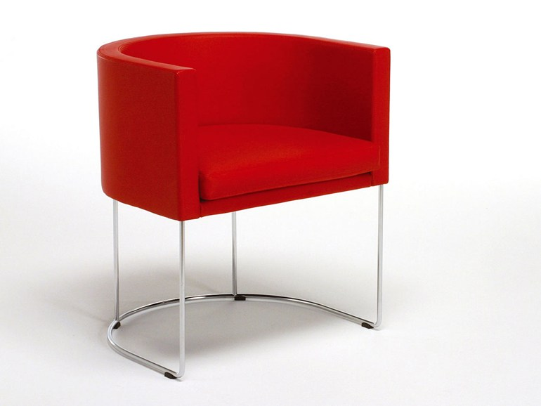
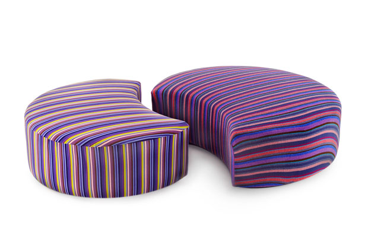

Piero Lissoni
Description
of my project :
For the my
project final i
have chosen two models of Piero Lissoni.
These two models fall within the theme of the "Italian design templates".
I also chosen another model that fall in the theme of the "Models of a modular furniture system". The model that i have chosen is a wardrobe built by "Empowerhouse".
Empowerhouse is the result of a community-based approach to building affordable, site net-zero housing that addresses all aspects of domestic life.
These two models fall within the theme of the "Italian design templates".
I also chosen another model that fall in the theme of the "Models of a modular furniture system". The model that i have chosen is a wardrobe built by "Empowerhouse".
Empowerhouse is the result of a community-based approach to building affordable, site net-zero housing that addresses all aspects of domestic life.
|  |  |
 |
| Go to Model | Go to Model | Go to Model |